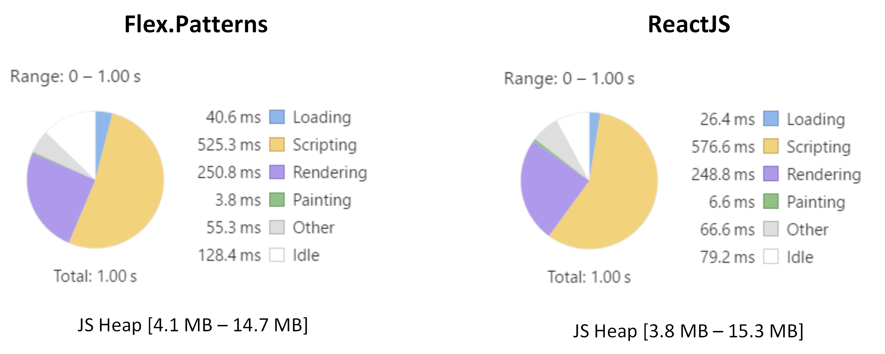

ReactJS and Flex.Patterns
Firstly, it’s definitely incorrect to compare Flex.Patterns with ReactJS. But several times users asked us to do it in borders of pattern’s engine.
Okay. As a test subject was token “long” table (1 000 rows) with simple conditions. Here you will fine sources for Flex.Pattern and for ReactJS.
And results:

Sure. Different interactions give a little different results. But basically both are close.